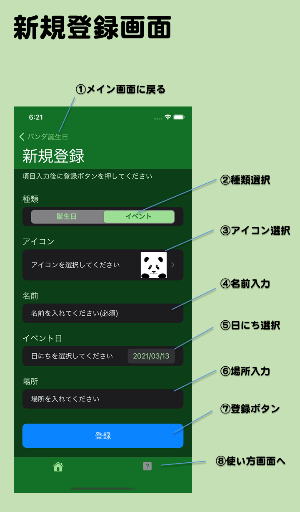

- 新規登録画面
- メイン画面で追加ボタンを押して移動してくる画面です。ユーザーが自分で好きな情報を登録できます。
- 画面の説明
- ①メイン画面に戻るへ
- 情報登録を中断してメイン画面に戻ります。情報登録したい場合は画面下の登録ボタンを押してください。
- ②種類選択
- まず情報の種類を選択します。誕生日あるいはイベント（記念日など）のいずれかを選びます。誕生日を選んだ場合は入力項目に性別選択と種別選択が増えます。
- ③アイコン選択
- メイン画面や詳細情報画面で表示されるアイコンを選びます。
- ④名前入力
- 情報を示す名前を入力します。既にある情報と同じ名前は登録できません。
- ⑤日にち選択
- カレンダーを表示して年月日を選択します。
- ⑥場所入力
- 現在いる場所もしくはイベントの場所を入力します。メイン画面でグルーピングに「場所」を選んだ時に同じ場所がまとめられて表示されます。
- ⑦登録ボタン
- 上にある情報を入力した後にこのボタンをタップして情報を登録します。情報が登録されたら自動的にメイン画面に戻ります。
- ⑧使い方画面へ
- この使い方画面を表示します。